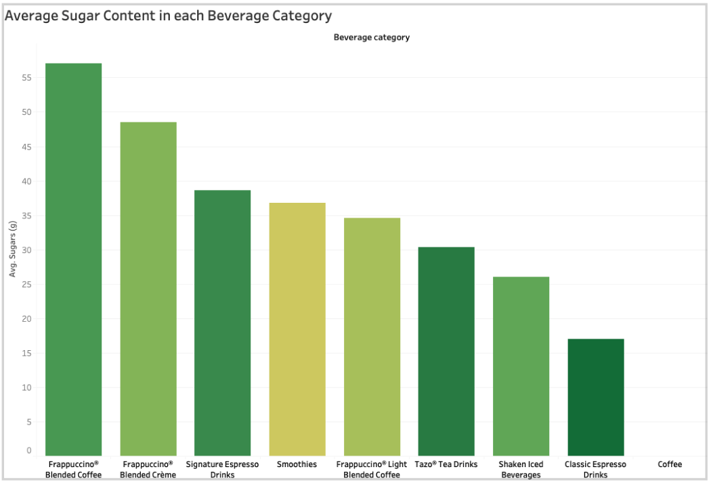

Life is a Highway by Rascal Flatts
One song that my family and I love to sing and dance to together is Life is a Highway by Rascal Flatts. I love Rascal Flatts just as much as the Disney movie, Cars, where this song originates from. My sister and I grew up watching Disney movies like this and I wouldn't have it any other way!
Song Transcript/Lyrics:
Whoo!
Mmm, yeah
Life's like a road that you travel on
When there's one day here, and the next day gone
Sometimes you bend, sometimes you stand
Sometimes you turn your back to the wind
There's a world outside every darkened door
Where blues won't haunt you anymore
Where the brave are free and lovers soar
Come ride with me to the distant shore
We won't hesitate
To break down the garden gate
There's not much time left today, yeah
Life is a highway
I wanna ride it all night long
If you're goin' my way
Well, I wanna drive it all night long
Through all these cities and all these towns
It's in my blood, and it's all around
I love you now like I loved you then
This is the road, and these are the hands
From Mozambique to those Memphis nights
The Khyber Pass to Vancouver's lights
Knock me down and back up again
You're in my blood, I'm not a lonely man
There's no load I can't hold
A road so rough, this I know
I'll be there when the light comes in
Just tell 'em we're survivors
Life is a highway
I wanna ride it all night long (whoo!)
If you're goin' my way
I wanna drive it all night long (all night long)
A-gimme, gimme, gimme, gimme, yeah
Life is a highway
Well, I wanna ride it all night long, mmm, yeah
If you're goin' my way (if you're goin' my way)
I wanna drive it all night long (all night long)
There was a distance between you and I (between you and I)
A misunderstanding once
But now we look it in the eye, ooh, yeah
Mmm, yeah (whoo!)
There ain't no load that I can't hold
A road so rough, this I know
I'll be there when the light comes in
Tell 'em we're survivors
Life is a highway
Well, I wanna ride it all night long (all night long, yeah)
If you're goin' my way
Well, I wanna drive it all night long
A-gimme, gimme, gimme
A-gimme, gimme, yeah
Life is a highway (life is a highway)
I wanna ride it all night long, whoo, ooh, yeah
If you're goin' my way (if you're goin' my way)
I wanna drive it all night long (all night long, yeah)
C'mon, gimme, gimme, gimme
Gimme, gimme, gimme, yeah
Life is a highway
I wanna ride it all night long
(Yeah, I wanna drive it all night long, baby)
If you're goin' my way (if you're goin' my way)
I wanna drive it all night long (all night long)
My mom and my dad both graduated from UVa, and I am a student here now. UVa is near and dear to my families heart, and this video in particular captures my families love for the school and what it truly means to be a Hoo!
Video Transcript:
[Student 1]: The energy and the passion here at UVa is unparalleled. And I think that energy is what drives all of us together to work together and push ourselves to become the best that we can be.
[Student 2]: Everyone can make UVa what they want it to be.
[Student 3]: You can take charge of what you do in your organizations and what you do in the classroom.
[Student 4]: Once you find your place, you'll never want to leave.
[Student 5]: To walk down the lawn or to, uh, go into these gorgeous old academic buildings and think, I belong here. Like, I am part of this place. That's actually a really cool thing to go through.
[Student 2]: Even on the hard days, there's always something good that reminds me, like, I'm supposed to be here.
[Student 6]: More than anything. It's the people. It's the people that will remember the most.
[Student 7]: And those people have been the most important in shaping who I am.
This chart shows the average sugar content in Starbucks drinks, highlighting how certain drinks at Starbucks, my families personal favorite, are not good for you.
